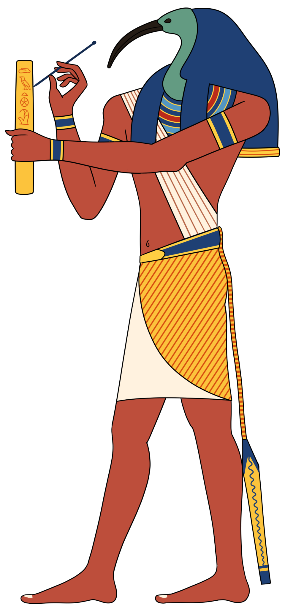

Происхождение и образ
Тот (егип. Джехути, греки дали своё имя Тот) — бог мудрости, письма, знания и измерения времени. Он — саморождённый: по гермопольской теологии девятка богов была создана словом Тота; по другой версии он вышел изо рта Ра, «как ибис с головы» — и с тех пор слово первичнее мира. Тот не изобретает порядок — он его называет: назвать вещь её истинным именем и значит поместить её в мир. В этом он — бог-условие всей египетской магии Хеки.
Его пара и контрапункт — Маат: по мифу Тот восстанавливает нарушенную Маат, «восстанавливает равновесие». Он примиряет враждующих (Гора и Сета), лечит больных (в мифах он исцеляет глаз Гора и сам Ра), проводник воли богов и хранитель записи всего происходящего. «Писец Ра» — так его зовут тексты.
Иконография
Тот — человек с головой ибиса (длинный изогнутый клюв — знак точности: ибис ловит «тайну» в иле) либо в облике павиана: павианы встречают рассвет — боги, приветствующие солнце; лунный Тот и павиан, и ибис. В руках — письмо: тростниковое перо и дощечка, а также посох уас и анх: власть и жизнь даны ему как писцу судьбы. На голове — диск убывающей луны с серпом: Тот — «счётчик» лунных суток, владыка месяца и года.
Главный центр культа — Хеммену (Гермополь, совр. Эль-Хайн) с храмом «Джехути великий бык»; там в Позднее время содержали священных мумифицированных ибисов и павианов: сотни тысяч погребённых птиц в галереях Тунет-эль-Гебеля — «записаны» навсегда, как и подобает богу письма.
Функции: время, письмо, суд
Время. Тот — изобретатель календаря и «владыка лет»: он измерял лунные циклы, распределял часы дня и ночи, «записывает, кому сколько лет отпущено». «пять лишних дней» года (эпагомены) — по мифу — рождены из выигрыша Тота в игру сенет у луны: пять дней, в которые родились Осирис, Гор, Сет, Исида и Нефтида — время, хитростью выманенное у вечности для жизни богов.
Письмо. Меду нетжер — иероглифы — его дар людям; он «счёт и меру» дал ремеслам, установил слова и язык. Жрецы-писцы называли себя «книгоносами Тота».
Суд. В Зале Двух Истин Тот стоит у весов с палитрой писца и записывает вердикт: перевесило сердце перо Маат или нет. Он же — посредник тяжбы Гора и Сета, чьё решение открыло фараону трон.
Гермополь и «герметическая» тропа
В греко-римском Египте Тота отождествили с Гермесом — и родился Тот-Гермес Трисмегист, «трижды величайший» (египетский эпитет «великий великий великий»?). От его имени — «герметика»: тайные тексты «Герметического корпуса», алхимия, астрология, философия тайного слова. Идея «слова, творящего реальность» (главный принцип египетской магии) через Тота дошла до ренессансной Европы и дальше — к легендам о «Книге Тота» и «изумрудной скрижали». На Севере его функциональный двойник — Один: мудрость, завоёванная жертвой, руны и слово-сила: сравнение.